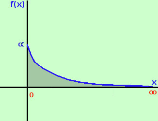
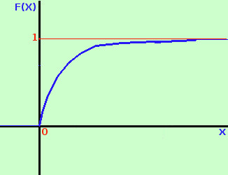

|
Anche questa e' interessante soprattutto per i calcoli che ci introducono poi alla distribuzione piu' "gettonata" (legge di Gauss) Consideriamo la variabile casuale X che assume tutti i valori nell'intervallo [0;+∞] con funzione densita' f(x) = ke-αx con α valore dato e k valore da determinare Essendo la probabilita' totale su [0;+∞] uguale ad 1 possiamo trovare il valore di k impostando l'equazione ∫0+∞ ke-αxdx = 1 otteniamo Calcoli 
quindi la nostra funzione densita' e' f(x) = αe-αx Il grafico di tale funzione, essendo una funzione di tipo esponenziale con esponente negativo, parte dal valore α sull'asse y (infatti ponendo x=0 abbiamo y=αe0=α·1=α) e si avvicina asintoticamente all'asse delle x (per x →+∞ abbiamo y →αe-∞= α·0 =0 Otterremo la funzione di ripartizione calcolando l'integrale da 0 a x della funzione densita' 
Calcoli quindi abbiamo la funzione di ripartizione
a destra la sua rappresentazione grafica studio intuitivo della funzione Calcoliamo ora il valore medio
Calcoliamo ancora la varianza Prima calcolo il valore medio del quadrato della variabile aleatoria
Adesso, per trovare la varianza da questo valore sottraggo il quadrato del valore medio
Infine calcoliamo lo scarto quadratico medio Basta applicare la radice al risultato precedente: otteniamo
quindi Nella variabile casuale con distribuzione esponenziale lo scarto quadratico medio coincide con il valore medio | .
||||||||||||||||||||||||||||||||||||||||||||||||||||||||

|

|

|

|